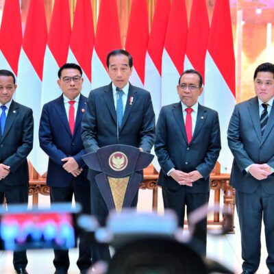

Serahkan Bantuan Gagal Panen di Grobogan, Presiden Jokowi Harap Petani Segera Tanam Padi

Selasa, 23 Januari 2024 13:47 WIB

Kepala Negara memastikan bahwa JKN-KIS dapat dimanfaatkan oleh masyarakat untuk semua jenis penyakit, seperti sakit jantung, diabetes, hipertensi, dan katarak.
Kepala Negara memandang bahwa kapasitas rumah sakit tersebut juga harus ditambah.